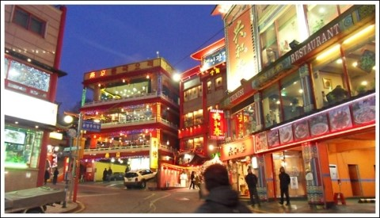
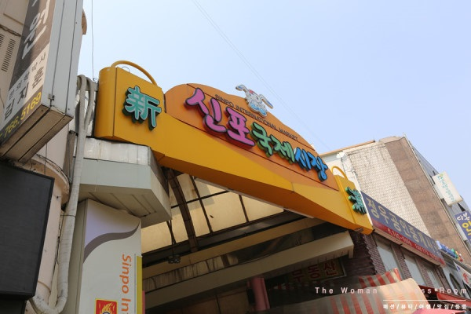
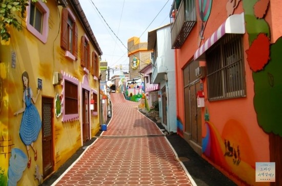
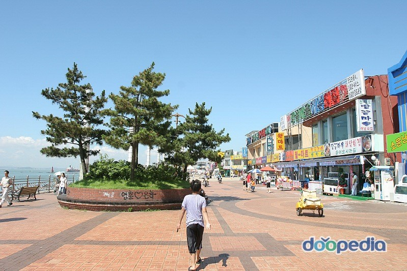

◀메인화면
당신이 선택한 인천. 이런데는 어떠신가요?
당신의 배를 채울 먹을거리!

인천의 차이나타운은 볼거리도 많고 먹거리도 많은 인천 인기장소중 하나에요!
다양한 중국요리들을 경험할수있는 좋은 찬스!
다양한 중국음식과 다양한 볼거리가 존재하는 차이나타운
한번씩 가보면 좋을것같아요!
차이나타운의 자세한 정보!

인천 신포국제시장!
신포국제시장은 국제시장이라는 이름답게 외국인이 와도 먹을수 있는 음식들이 다양하게 있어요!
그만큼 다양한 먹거리와 오랜전통을 가진 신포국제시장
거리를 다 지날쯤엔 이미 배는 빵빵
신포국제시장의 자세한 정보!
배도 채웠겠다 슬슬 보면서 즐기자 볼거리 와 즐길거리!

인천 송월동의 동화마을!!!
벽에 아기자기한 벽화들과 함꼐 걸어가면서 먹는 길거리 음식은 이미 J.M.T
특히 "커플"들이 자주 가서 체험할게 많다구 하네요!!^^
혹시 커플이시라면 한번쯤은 가볼만할지두?

인천 월미도!
인천 월미도는 이미 전국에서 제일 유명한 캠핑장중 하나라고 한데요!
심심하지않게 놀거리도 많으면서
친구들과 캠핑하면서 함께 우정을 키울수도 있는
월미도로 가보아요!
월미도의 자세한 정보!